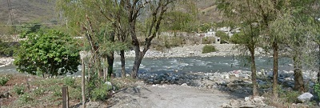

Chicoasén es uno de los municipios pertenecientes al Estado de Chiapas, México. Su extensión territorial es de 82 km² que representa el 0.1 por ciento con relación a la superficie estatal y el 0.42 por ciento de la regional. En Chicoasén se encuentra la Presa Chicoasén la cuarta planta de generación de energía hidroeléctrica más productiva del mundo, su nombre oficial es Manuel Moreno Torres, y tiene la cortina de contención de embalse más alta del mundo. Esta presa embalsa las aguas del río Grijalva, mismo que proviene de Guatemala, y atraviesa los estados de Chiapas y Tabasco de Sur a Norte. Su alta productividad se explica por el efecto acelerador proporcionado por la fuerza que toma la corriente del río a su paso por elCañón del Sumidero, al extremo del cual está situada. La energía eléctrica generada por esta planta abastece 35% del consumo nacional de electricidad, así como 20% de la de Centroamérica. Por sí mismo, la combinación natural-tecnológica de este complejo hidroeléctrico proporciona un espectáculo de gigantismo.
La central hidroeléctrica Chicoasén lleva también el nombre del Ing. Manuel Moreno Torres, quien fue Director General de la CFE durante el sexenio del presidente Adolfo López Mateos. La central cuenta con ocho unidades turbogeneradoras de 300 MW cada una, para una capacidad instalada total de 2,400 MW. Estas unidades entraron en operación comercial en distintos meses de 1980 y 1981.Tres unidades adicionales de 310 MW fueron instaladas y entraron en servicio en 2005. La energía generada es transportada a través de diez líneas de transmisión: seis a 400 KV y cuatro de 115 KV. La mayoría de las líneas de alta tensión en 400 KV envían el fluido eléctrico hacia la Ciudad de Veracruz, al área central del país, con un enlace a la Central Hidroeléctrica La Angostura, en el municipio de Venustiano Carranza, Chiapas. De las líneas de baja tensión en 115 KV, dos van hacia Tuxtla Gutiérrez, Chiapas; una a San Cristóbal de las Casas, Chiapas y una más es enlace a la Central HidroeléctricaBombaná, en el municipio de Soyala, Chiapas.
